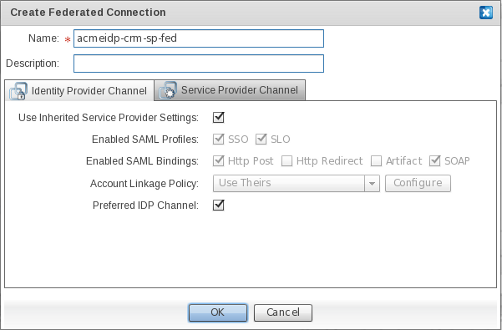
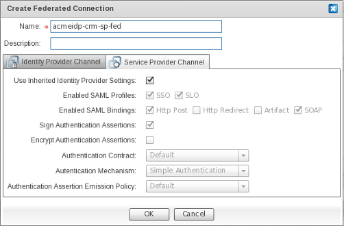

JOSSO.orgCommunity Documentation
A Circle of Trust is a group of Service Providers that share linked identities and have pertinent business agreements in place regarding how to do business and interact with identities.
The first and most obvious way in which trust is established, is through existing relationships with partners, vendors and customers. If your organization already has agreements in place with another organization and you have a history of working together, they're already part of your circle.
Having put together the building blocks of an Identity Appliance defining at least one Identity Provider (IdP) and a set of Service Providers, the next step is to enable a seamless SSO experience for users to leverage when consuming the business services provided by the Service Provider (SP).
This is accomplished by creating a relationship of trust between IdPs and SPs, who agree to honor one another's authentication and authorization information.
To connect IdP and SP elements in order to create a relationship of trust, use the "Federated Connection" edge available in the "Connections" palette drawer.
Click on the "Federation Connection" element. Select the SP and drag the edge onto the target IdP.
The following dialog will appear for defining the characteristics of the federation connection between the chosen entities.
On the Contract screen, specify the SAML Profiles and Bindings to be enabled, as well as the level of security of the artifacts involved in message exchanges between SPs and the IdP.

Field Descriptions
|
Field |
Description |
|
Name |
The unique identifier of the Federated SSO connection. |
|
Description |
A descriptive text for the Federated SSO connection. |
In the "Identity Provider Channel" section, define the SP's contract, specific to the IdP end of the Federated SSO connection. IdP Channel properties specified within this section will override the default contract established by the SP toward trusted IdPs.
Field Descriptions
|
Field |
Description |
|
Use Inherited Service Provider Settings |
Select this checkbox if you wish to override the default contract established by the SP toward the IdP. |
|
Enabled SAML Profiles |
The SAML Profile to activate in the SP for the IdPs. These mainly represent usage scenarios which arerealized by the SP for this specific IdP. The most important SAML profile is the "Web Browser Single Sign-On Profile", which can be enabled by selecting the SSO checkbox. Select the SLO checkbox to enable Single Logout Support. |
|
Enabled SAML Bindings |
Enable SAML bindings for selected SAML profiles. This action specifies the mapping of a SAML protocol message onto standard messaging formats and/or communications protocols. Select the Http Post checkbox to convey SAML messages through HTTP Post. Select the Http Redirect checkbox to convey SAML messages through HTTP Get. Select <the></the> Artifact checkbox to convey SAML messages through the SAML Artifact Binding, which builds on both HTTP Redirect and SOAP bindings to exchange SAML messages. Select the SOAP checkbox to convey SAML messages through SOAP over HTTP(s). |
|
Account Linkage Policy |
(TBD: there is a configure button which is not bound to any action at all. Remove or realize it's behavior) The means by which input claims conveyed in the security token, which are issued and submitted by the IdP's end of the Federated SSO connection, are mapped to output claims; which will in turn be consumed by the relevant party in order to authorize users and grant appropriate access. Select "Use Theirs" to link IdP and SP accounts using the supplied name identifier, and mapping input to output claims in a one-to-one fashion. Select "Use Ours" to link IdP and SP accounts using the supplied name identifier, and to issue output claims based only on the user details that are available within the identity source that is connected to the SP. Select "Aggregate" to link IdP and SP accounts using the supplied name identifier, and to issue output claims based on merging both the user details conveyed in the security token and those obtained from the identity source connected to the SP. |
|
Preferred IdP Channel |
Select this checkbox to select the IdP of this connection as the SP's default authority for identification of a user when a protected resource is requested. More specifically, this is the IdP to which the user will be redirected in an SP-initiated usage scenario. |
In the "Service Provider Channel" section, define the IdP's contract specific to the SP end of the Federated SSO connection. Service Provider Channel properties specified within this section override the default contract established by the IdP toward trusted SPs.

Field Descriptions
|
Field |
Description |
|
Use Inherited Identity Provider Settings |
Select this checkbox if you wish to override the default contract, established by the IdP end, toward trusted SPs. |
|
Enabled SAML Profiles |
The SAML Profile to activate in the IdP, for SPs. These profiles mainly represent usage scenarios which have been realized by the IdP for a specific SP. The most important SAML profile is the "Web Browser Single Sign-On Profile", which can be enabled by selecting the SSO checkbox. Select the SLO checkbox to enable Single Logout Support. |
|
Enabled SAML Bindings |
The SAML bindings to be enabled for your chosen SAML profiles. This specifies the mapping of a SAML protocol message onto standard messaging formats and/or communications protocols. Select the Http Post checkbox to convey SAML messages through HTTP Post. Select the Http Redirect checkbox to convey SAML messages through HTTP Get. Select <the></the> Artifact checkbox to convey SAML messages through the SAML Artifact Binding, which builds on both HTTP Redirect and SOAP bindings for exchanging SAML messages. Select the SOAP checkbox to convey SAML messages through SOAP over HTTP(s). |
|
Sign Authentication Assertions |
Determines whether SAML Authentication Assertions pushed to this SP will be digitally signed. Digitally signing SAML Authentication Assertions provides proof-of-identity of the IdP to Service Providers, as well as ensuring their integrity. |
|
Encrypt Authentication Assertions |
Determines whether SAML Authentication Assertions pushed to this SP will be encrypted. Encrypting SAML Authentication Assertions provides confidentiality to SAML messages, thus preventing eavesdropping. |
|
Authentication Contract |
The message contract for submitting input claims (such as user credentials) that have been made to this SP, to the Identity Provider. The default and only available contract builds on JOSSO-specific parameters which are submitted when simple web-based authentication is attempted. |
|
Authentication Mechanism |
The specific means by which the SP's connection end can authenticate users. The only supported authentication mechanism is Simple Authentication , which identifies users based on username and password. |
|
Authentication Assertion Emission Policy |
This enables you to customize how, upon succesful authentication, assertions are emitted for the SP's connection end. The emitted authentication assertions are conveyed in security tokens pushed to relying parties. |